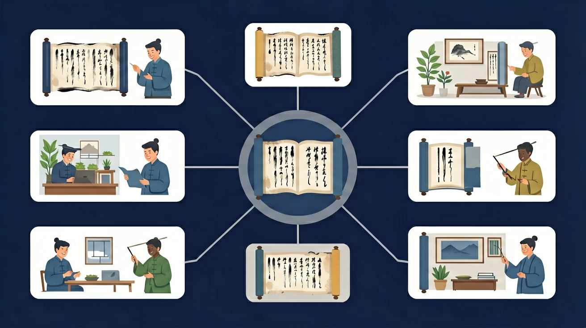

🌍 And（已知）：我们已经有了一定的基础知识
⚡ But（问题）：但还有一个重要概念需要深入理解
💡 Therefore（新知）：因此通过本节课的学习，我们将掌握新知识并能灵活运用

❓ 为什么‘ma’有四个不同的意思？
❓ 声调标错位置会闹笑话吗？
❓ 怎么记住二声和三声的区别？
学完这一课，这些问题你都能自信地回答。
And：学生知道汉字有不同发音
But：不清楚为什么同拼音有不同意思
Therefore：理解声调区分字义的作用
汉语有4个声调就像音乐的音高。比如‘ma’：一声妈（mā）是平调，二声麻（má）往上扬，三声马（mǎ）先降后升，四声骂（mà）快速下降。像唱歌时‘do re mi’的音高变化，数字1-4分别代表这四种调型。
🌍 看天气预报时说‘明天晴（qíng）’和‘请（qǐng）带伞’，虽然拼音都是qing，但声调不同意思就完全不一样啦！
‘衣服’的‘服’是第几声？
回忆：今天学了哪些关键词和规则？试着说出来。
用自己的话解释今天学的核心概念，不看书能说清楚吗？
用今天的知识解决一个实际问题，或写一个新例子。
把今天的知识与已有知识联系起来：有什么共同点？有什么区别？能不能自己创造一道新题？
记录教室中10个物品的拼音并标注声调
And：学生能分辨四声调型
But：不知道声调符号该标在哪里
Therefore：掌握标调规则
声调符号要标在韵母的‘老大’头上：有a就找a（如huā），没a找o/e（如duō），iu并列标最后（如niú）。特殊记jqx小淘气，见到ü眼要挖去（如qún）。比如‘水果’的‘水（shuǐ）’，u和i中i是老二，所以标在i上。
🌍 写‘学校’拼音时，‘校（xiào）’的声调要标在a上，因为a是韵母里最厉害的字母！
‘流水’的‘流’标调位置正确的是？
And：学生能正确标注单字声调
But：遇到词语时声调会变化
Therefore：理解常见变调规律
两个三声字连读时，前一个字会变成二声。比如‘老虎’读作láohǔ（标调仍写lǎohǔ）。‘一’在四声前变二声（如一个yí gè），在非四声前变四声（如一天yì tiān）。数字7和8在四声前也要变二声，比如‘七岁’读qí suì。
🌍 说‘你好’时，虽然写nǐ hǎo，但实际读作ní hǎo，这就是声调在跟你变魔术呢！
‘一起’的正确读音是？
And：学生掌握声调基本规则
But：实际对话中容易混淆同音字
Therefore：强化声调辨义功能
相同拼音靠声调区分不同意思。比如shū：一声‘书’是书本，二声‘熟’是煮熟，三声‘鼠’是小动物，四声‘树’是植物。再如数字42‘四十二’（sì shí èr），如果读成sī shī ér就变成‘撕十儿’完全不通啦！
🌍 点菜时说‘我要饺子（jiǎo zi）’和‘我要浇汁（jiāo zhī）’，老板会端来完全不同的东西哦！
医生问‘哪里疼？’应该用哪组声调？
将音节拆成声母+韵母+声调三部分
声调像音乐旋律，改变音高产生不同字义
对比一声平调与四声降调的气流变化
用调值五度标记法图示声调走向
给英文名字标注模拟声调（如Anna→Ānà）
先独立作答，再点选项查看对错与错因。
下列词语中声调标注正确的是
'老师'的正确拼音标注是
下列哪个字的声调与其他三个不同
给拼音标注声调：'ma'（表示'骂'）____
答案：mà
'骂'是第四声，应标降调符号
完成拼音标注：'shuǐ'对应的汉字是____
答案：水
第三声'shuǐ'对应'水'字
✅ 声调永远标在韵母主要元音上
💡 受拼音字母书写顺序干扰
✅ 完整发音需有214调值的转折
💡 语流中三声常读为半三声
口诀：一声平平二声扬，三声拐弯四声降
类比：像坐过山车：一声是平路，二声上坡，三声先下后上，四声俯冲